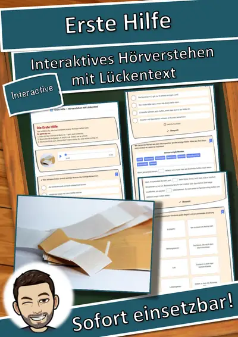
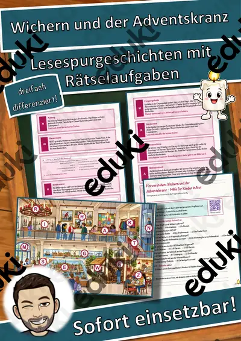

Erste Hilfe beim Sport – richtig handeln bei Sportverletzungen – Lesespurgeschichte mit Rätselaufgaben (Klasse 7)
Erste Hilfe beim Sport – richtig handeln bei Sportverletzungen – Lesespurgeschichte Sport (Klasse 7)Schick deine Klasse auf eine Lesespur durch einen Erste-Hilfe-Übungstag in der Sporthalle! Luca befürchtet, dass er bei einem Unfall nur herumstehen würde – genau deshalb üben er und Jana heute jeden Handgriff. Am Halleneingang geht es um Vorbeugung, an der Unfallstelle ums Ruhebewahren und Ansprechen, am Notruftelefon um die 112 und die W-Fragen. An der Kühlbox lernen alle die PECH-Regel, auf der Wartebank den richtigen Umgang mit Nasenbluten, am Waschbecken das Versorgen einer Schürfwunde, auf der Seitenlagematte die stabile Seitenlage – und im Sanitätsraum wird jeder Unfall dokumentiert. Der kleine Erste-Hilfe-Koffer Medi ist immer dabei. Am Ende jedes Abschnitts verrät ein Hinweis den nächsten Ort auf dem Plan – nur wer genau liest, findet den Weg und sammelt alle geheimen Buchstaben zum Lösungswort.
Die passende Lesespur für den SPORTUNTERRICHT der 7. Klasse – ideal zur Sicherheitserziehung, für Sporttheorie, als Vorbereitung auf einen Erste-Hilfe-Kurs oder den Schulsanitätsdienst: Sie verbindet sinnentnehmendes Lesen mit Handlungswissen, das im Ernstfall hilft. Das Material ist SOFORT EINSETZBAR und in DREI DIFFERENZIERUNGSSTUFEN (leicht ★ / mittel ★★ / schwer ★★★) angelegt.WICHTIG: Das komplette Material ist sowohl in FARBE als auch in SCHWARZ-WEISS enthalten – ideal zum Sparen von Druckkosten.DAS IST ENTHALTEN
- Lesespurgeschichte in 3 Niveaus (leicht, mittel, schwer)
- farbiger Hallenplan als Suchkarte
- Hörverstehen mit QR-Code zur MP3 (selbstständiges Hören mit Kopfhörern)
- vier Aufträge auf dem Weg: ein Quiz, eine Rechenaufgabe, eine Zuordnung und ein Steckbrief
- Rätselseite (Wörter-Suchsel + Fragen)
- Ausmalbild zum Thema (Erste Hilfe in der Sporthalle)
- ausführliches Lösungsblatt für die Lehrkraft
- alles zusätzlich als komplette Schwarz-Weiß-VarianteSO GEHT DIE LESESPURDie Jugendlichen lesen ab START, finden im Text den nächsten Ort, suchen ihn auf dem Plan und lesen bei dieser Station weiter. An jeder richtigen Station gibt es einen Buchstaben. Eingebaute Sackgassen (Tribüne, Kletterseile, Ballwagen, Hausmeisterkammer) sind keine Stationen und dienen der Selbstkontrolle. Am Ende werden die gesammelten Buchstaben umgestellt und ergeben ein geheimes Lösungswort. (Die Lösungen sind selbstverständlich nur im Lösungsblatt für die Lehrkraft enthalten.)INHALTLICHER SCHWERPUNKTVerletzungen vorbeugen, Ruhe bewahren und Unfallstelle sichern, Notruf 112 mit W-Fragen, PECH-Regel (Pause, Eis, Compression, Hochlagern), Nasenbluten richtig versorgen, Schürfwunden mit Einmalhandschuhen versorgen, Warnzeichen nach Kopfstößen, stabile Seitenlage, Verbandkasten und Verbandbuch, beim Verletzten bleiben.ABGEDECKTER LEHRPLAN (Klasse 7, Sport)
- Sport (LehrplanPLUS Bayern) – Jahrgangsstufe 7 „Gesundheit und Fitness“: Sicherheit im Sport, Unfälle vermeiden, im Notfall angemessen handeln und Erste Hilfe leisten.
- Deutsch – Lesen: Sachtexten gezielt Informationen entnehmen; Sprechen: einen Notruf strukturiert absetzen; Zuhören: einem Sachhörtext folgen (Hörverstehen mit MP3).
- Mathematik – Addition, Multiplikation, Bruchteile von Zeitangaben.
- Fächerübergreifend / Kompetenzen: Gesundheits- und Sicherheitserziehung, soziale Verantwortung, genaues Lesen und Prüfen, kreatives Gestalten (Ausmalbild).
Geeignet für Freiarbeit, Stationenlernen, Vertretungsstunden, Wochenplan, Projekttage, Sporttheorie und Distanzunterricht. Klassenstufe 7.
Ähnliche Materialien

Erste Hilfe – Hörverstehen mit Lückentext (interaktiv)

Erste Hilfe Lückentext mit Wortspeicher Hörverstehen und Suchsel

Erste Hilfe bei Kälte – Unterkühlung und Erfrierungen – Lesespurgeschichte mit Rätselaufgaben (Klasse 8)

Erste Hilfe für Kinder – Arbeitsheft mit Postern, Notruf & Wunden Kl. 2–4

Handel Lückentext mit Wortspeicher Hörverstehen und Suchsel

Wichern und der Adventskranz – Hilfe für Kinder in Not – Lesespurgeschichte mit Rätselaufgaben (Klasse 7)

Meine erste eigene Wohnung – Lebenspraxis in einfacher Sprache: 3 Niveaus, Rollenspiele, Test